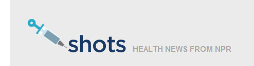
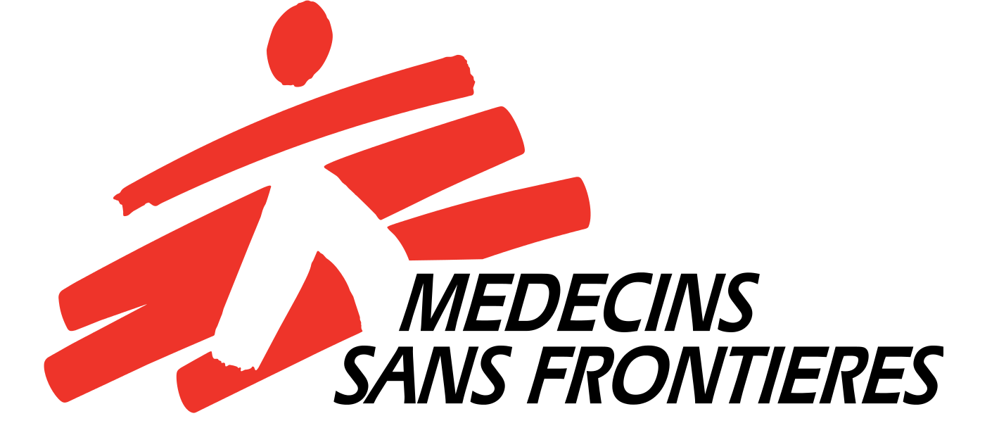

The pre-health life is a demanding life. Along the way, you may have found yourself staring into a textbook at two a.m. wondering if any of this was really worth it. As pre-health advisors, we often encourage students considering this path to thoroughly explore the healthcare profession before jumping in.
As you're all well aware, the most hands-on method of exploration is shadowing. But last month, we added on to this with a list of recommended books for aspiring healthcare professionals. Many students responded that amidst their busy schedules, it was difficult to fit in time to read books outside of course requirements. We received many requests for quicker, more convenient resources for staying informed of topics in medicine and healthcare.
Our answer to these requests is the following list of blogs that we feel can provide students with concise and regular updates on what’s going on in healthcare. Healthcare is a diverse profession, and to reflect this, we’ve chosen blogs that cover topics and news from different perspectives in the field.
Public and Global Healthcare Blogs
NPR Shots
 NPR Shots, the health news section of National Public Radio, delivers articles spanning the spectrum of healthcare topics. This blog closely follows the format of typical news outlets, with articles ranging from neutral coverage to more opinionated commentary. You can easily navigate the blog’s 5 topics – Your Health, Treatment & Tests, Policy-ish, Health Inc., and Public Health. Each section compiles articles summarizing the most striking healthcare developments in layman terms so there’s no need to stretch your brain and tackle heavy jargon. Complete with podcasts, videos and eye-catching visuals, NPR shots provides a comprehensive and engaging view of the current state of healthcare in the US. Articles often feature interviews with experts to provide greater insight into the voices influencing the future of healthcare. As part of a public radio aiming to inform a wide audience, NPR Shots is a great starting point for exploring the complex topics that shape and define healthcare.
KevinMD.com
KevinMD.com is the self-proclaimed leader in social media for physicians. Although the blog’s target audience is physicians and healthcare providers, you may find it worthwhile to see the conversations going on in healthcare. This is a commentary-heavy blog that ponders the moral and human issues that arise in the day-to-day lives of healthcare providers. Posts are authored by healthcare providers and patients, and provide firsthand insight into the patient-centric side of healthcare. You’ll find that some posts serve as passionate call to action, while others evoke thoughtful reflection encouraging providers to critically analyze the current state of healthcare. If you’re following the blog on your browser, you may find the sidebar of popular posts and recent health news to be particularly helpful for navigating the site. Posts on KevinMD.com cover topics from sweeping healthcare policy to personal musings on the profession. No matter the topic, each post ultimately circles back to the role that healthcare plays in bettering the lives of patients.
Medicins Sans Frontieres
 Medicins Sans Frontiers (MSF), also known as Doctors Without Borders, is a global humanitarian health organization. In recent news, their staff have provided aid throughout armed conflicts in Syria and Sudan and natural disaster in Nepal. Blogs are maintained by patients and MSF staff from around the world and transcend cultural divides to shed light on global health disparities. Authors update posts throughout their missions or treatments. These unfiltered accounts of their experiences provide readers from diverse backgrounds with a unique window into the very human struggles, joys, and resilience that shape each writer’s experience. You may recall one of our recommended books, Six Months in Sudan which was based on the blog of Dr. James Maskalyk. While the medical staff blogs may be of most interest to you, we encourage you to explore patient and administrative staff blogs to better understand the multifaceted nature of healthcare. For students interested in global health and humanitarianism, the MSF blogs can give you firsthand insight into the ethics, challenges, and rewards of delivering emergency care to those who need it the most.
Research and Technology
NIH Director's Blog
You’re probably familiar with the National Institutes of Health and used their online resources in your courses. As the name suggests, the blog is maintained by NIH Director Dr. Francis Collins and highlights advances in biomedical research. Although NIH is a US government agency, healthcare research is internationally collaborative and the blog occasionally features studies being conducted around the world. This blog may be particularly informative for those of you interested in pursuing a PhD, as many posts review recently published research articles. Don’t be intimidated by Collins’ status as a well-respected physician-scientist – just like the other blogs we’ve listed, his literature reviews are much easier to digest than the dense papers he cites. If a review sparks an interest, you can always further explore the cited papers at the end of the post. Interspersed with colorful graphics and eye-opening videos, the NIH Director’s Blog provides a great snapshot of research at the forefront of medicine.
IEEE Spectrum Human OS
IEEE is the Institute of Electrical and Electronics Engineers. What does this have to do with pre-health, you might ask. Technology – ranging from electronic health records to the groundbreaking da Vinci robotic surgery system – has a rapidly growing presence in medicine. Although IEEE Spectrum is geared towards tech-savvy readers, the Human OS blog is a great resource for any student interested in understanding and keeping up with healthcare technology. No in-depth technical knowledge is required to appreciate the advancements that aim to optimize the quality, efficiency, and accessibility of modern healthcare. Articles featured in Human OS discuss recent developments in biomedical engineering and their potential impact – both positive and negative – on medicine. You may want to further explore the clinical studies cited in the blog to gain insight into the collaboration between engineers and physicians to advance healthcare. As you read through this blog, we encourage you to take note of the engineer’s perspective on healthcare and formulate your own opinions as a future healthcare professional.
We encourage you to use the commentary, perspectives, and information you encounter in these blogs to guide your understanding of healthcare and continue these conversations amongst your peers. You can easily stay updated on current events by subscribing to a blog through Facebook, Twitter, email, and similar social media platforms. This is by no means a comprehensive list of blogs, and as you will notice, the topics addressed in each blog reflect the interests of the writers. We advise you to approach these blogs with a critical mind and seek multiple perspectives on issues. Each blog is filled with direct links to primary sources of research and healthcare news that you may want to further explore to enrich your understanding of these topics. If you’ve come across helpful and informative blogs on your own time, feel free to email us your questions and suggestions!
Tags: Health News, Recommendations, Student Resources, Public Health, Global Health, Research